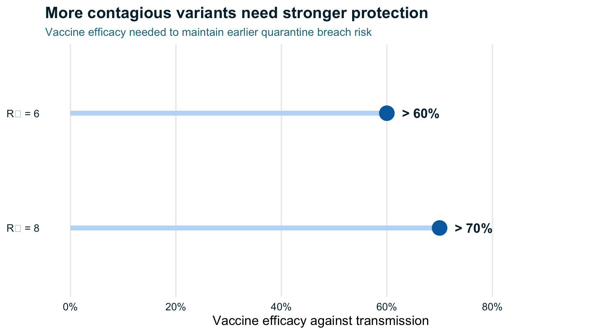
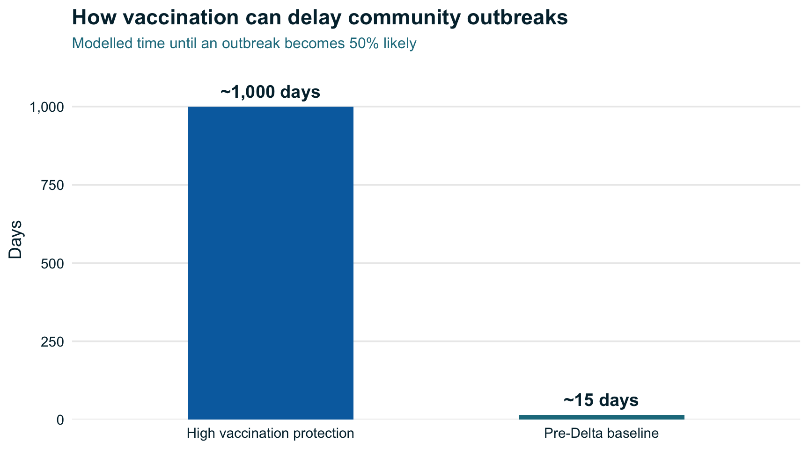

1. Problem Description
The challenge of reopening Australia’s borders
In 2021, Australia faced an important question: could international travel safely resume if travellers and quarantine workers were vaccinated?
Throughout the COVID-19 pandemic, border quarantine helped Australia and New Zealand keep infections from spreading into the community. However, strict border restrictions also separated families, disrupted international travel and placed pressure on industries such as tourism and education.
As vaccination rates increased, reopening international borders became a more realistic possibility.
Then came the Delta variant.
Research showed that Delta was considerably more transmissible than earlier COVID-19 variants, making it harder to prevent infections from spreading (Campbell et al. 2021).
At the same time, studies of vaccine effectiveness demonstrated that protection against Delta differed from protection against earlier variants (Lopez Bernal et al. 2021).
This created a difficult challenge for policymakers: how could countries reopen while keeping the risk of community outbreaks low?
Two questions became particularly important:
- Could vaccination reduce the additional quarantine risk created by the Delta variant?
- Would vaccinating travellers and quarantine workers be enough to prevent community outbreaks?
Research by Zachreson et al. (Zachreson et al. 2022) investigated these questions through computer simulations of border quarantine and community transmission.
2. Analysis
How researchers investigated the problem
Rather than waiting for outbreaks to occur, researchers used computer simulations to examine how COVID-19 might spread under different conditions.
The study by Zachreson et al. (2022) used information from Australian and New Zealand international arrival data, Australian quarantine breach reports and public-health information to inform its modelling.
The researchers developed two connected simulations.
The first simulated infections within a quarantine facility containing up to 100 international travellers and 20 workers. It considered vaccination, testing, isolation and the possibility of infections escaping quarantine.
The second examined what could happen after an infection entered the wider community.
By combining these models, researchers investigated how three factors influenced COVID-19 risk:
- Virus transmissibility: How easily the virus spreads between people.
- Vaccine efficacy: How effectively vaccination reduces infection and transmission.
- Community vaccination coverage: The proportion of people vaccinated in the wider population.
These were hypothetical scenarios generated by computer models, rather than records of actual outbreaks.
Finding 1: More contagious variants require stronger protection
One of the clearest findings was that vaccination became less able to offset quarantine risk as the virus became more transmissible.
The researchers used a pre-Delta scenario with a basic reproduction number of \(R_0 = 3\) and no vaccination as their baseline.
The reproduction number, or \(R_0\), describes how many people one infected person would infect on average in a fully susceptible population.
For example, an \(R_0\) of 6 means that one infected person could infect approximately six other people under those conditions.
The study found that higher vaccine efficacy against transmission was required to maintain the original quarantine breach risk as transmissibility increased (Zachreson et al. 2022).
As shown in Figure 1, vaccine efficacy against transmission needed to exceed approximately 60% when \(R_0 = 6\) to maintain the pre-Delta quarantine breach risk.
When transmissibility increased to \(R_0 = 8\), this threshold rose to above 70%.
These values represent approximate thresholds from the model. They are not estimates of the effectiveness of any particular vaccine.
The important message is that the effectiveness of a quarantine strategy depends on how transmissible the circulating variant is.
As the virus becomes more contagious, stronger protection is required to maintain the same level of safety.
Finding 2: Community vaccination matters too
Reducing the chance of an infection escaping quarantine is important. However, what happens if an infected person still enters the community?
The researchers investigated this by modelling the spread of infections after a quarantine breach.
Their analysis considered how long it would take for the probability of an outbreak involving at least five cases to reach 50%.
The results showed that protecting the quarantine facility and protecting the wider community are two different challenges.
Vaccinating travellers and quarantine workers reduces the risk of infections escaping quarantine.
However, community vaccination becomes particularly important if a breach occurs.
When vaccine efficacy against transmission was below approximately 60%, increasing community vaccination coverage provided comparatively limited additional protection against outbreaks.
When efficacy reached 80% or higher, high vaccination coverage substantially delayed the point at which community outbreaks became likely (Zachreson et al. 2022).
Table 1 summarises the main findings.
| How vaccination affects COVID-19 outbreak risk | |
| Evidence from Zachreson et al. (2022) | |
| VACCINATION SCENARIO | KEY FINDING |
|---|---|
| Vaccination within quarantine | Reduces the risk of infections escaping quarantine. |
| Vaccine efficacy below 60% | Limited protection against community outbreaks, even with high coverage. |
| Vaccine efficacy of 80% or higher | Greater protection against community transmission as coverage increases. |
| High efficacy + high community coverage | Substantially delays the likelihood of a community outbreak. |
The results highlight why vaccination coverage matters beyond the quarantine facility.
A highly effective vaccine may reduce transmission, but its population-level benefit also depends on how many people are vaccinated.
Similarly, even high vaccination coverage cannot fully compensate for a vaccine that provides relatively limited protection against transmission.
Protecting the wider community requires both effective vaccines and widespread vaccination.
These findings relate to protection against transmission, rather than the separate question of how well vaccines prevent severe illness.
How much could vaccination delay an outbreak?
The simulations also showed just how strongly effective vaccination could influence the time until a community outbreak became likely.
Researchers measured the time until there was a 50% probability of at least one outbreak involving five or more cases.
Under the pre-Delta baseline scenario, this occurred after approximately 15 days.
However, in scenarios combining high vaccine efficacy with high community vaccination coverage, the modelled time could increase to the order of 1,000 days, although the results depended on virus transmissibility and the specific vaccination scenario (Zachreson et al. 2022).

As shown in Figure 2, the modelled time until a community outbreak became likely differed substantially between the scenarios.
Under the pre-Delta baseline, the model estimated approximately 15 days until there was a 50% probability of an outbreak involving at least five cases.
Under scenarios combining high vaccine efficacy with high community vaccination coverage, this increased to the order of 1,000 days (Zachreson et al. 2022).
The figure uses a logarithmic scale to display both scenarios clearly. These results do not mean vaccination guarantees 1,000 outbreak-free days, and the difference cannot be attributed to vaccination alone because the modelled conditions differ.
Instead, the findings illustrate how effective vaccination and high community coverage can substantially reduce outbreak risk.
What does this mean for reopening borders?
The research demonstrates why vaccination within quarantine was not enough to guarantee safe reopening during the Delta period.
While vaccinating travellers and quarantine workers could reduce the likelihood of a breach, an infection that entered the community could still develop into an outbreak.
The findings suggest that decisions about border restrictions needed to consider three factors together:
- How transmissible the circulating variant was.
- How effectively available vaccines reduced transmission.
- How much of the wider community was vaccinated.
These factors could change over time.
For example, a more transmissible variant could increase the chance of infections escaping quarantine, even when vaccination requirements remained unchanged.
Likewise, limited community protection could increase the risk that an escaped infection developed into an outbreak.
This is why the researchers’ findings support combining vaccination with effective testing, isolation and infection-control measures.
The broader lesson is that border reopening decisions should respond to changing evidence rather than rely on vaccination status alone.
3. Conclusion
Why vaccination was only part of the solution
So, could vaccination alone keep COVID-19 out of Australia?
The modelling suggests that vaccination was an important defence, but not a complete solution.
Research by Zachreson et al. (2022) found that vaccination could help offset the greater quarantine risk associated with more transmissible variants, but only when vaccine efficacy against transmission was sufficiently high.
For a virus with an \(R_0\) of 6, efficacy needed to exceed approximately 60% to maintain the earlier quarantine breach risk. When \(R_0\) increased to 8, the required efficacy rose above 70%.
The study also showed that vaccinating travellers and quarantine workers was not sufficient by itself to protect the wider community.
High community vaccination coverage, particularly when vaccines were highly effective against transmission, provided additional protection against outbreaks.
These findings are consistent with the broader evidence showing that the Delta variant increased transmission challenges and that vaccine protection varied across variants (Campbell et al. 2021; Lopez Bernal et al. 2021).
The central lesson is that no single measure can eliminate the risk of an outbreak.
For policymakers, effective border management requires considering vaccination, community protection, variant transmissibility and infection-control measures together.
Although this research focused on the Delta period, its broader message remains relevant: public-health strategies need to adapt when the risks they are designed to manage change.
References
Campbell, Finlay, Brett Archer, Henry Laurenson-Schafer, et al. 2021. “Increased Transmissibility and Global Spread of SARS-CoV-2 Variants of Concern as at June 2021.” Eurosurveillance 26 (24): 2100509. https://doi.org/10.2807/1560-7917.ES.2021.26.24.2100509.
Lopez Bernal, Jamie, Nick Andrews, Charlotte Gower, et al. 2021. “Effectiveness of Covid-19 Vaccines Against the B.1.617.2 (Delta) Variant.” New England Journal of Medicine 385: 585–94. https://doi.org/10.1056/NEJMoa2108891.
Zachreson, Cameron, Freya M. Shearer, David J. Price, et al. 2022. “COVID-19 in Low-Tolerance Border Quarantine Systems: Impact of the Delta Variant of SARS-CoV-2.” Science Advances 8 (14): eabm3624. https://doi.org/10.1126/sciadv.abm3624.